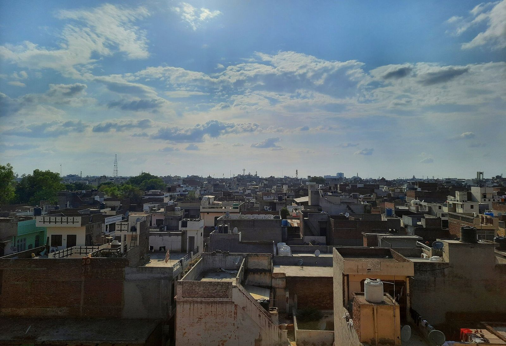
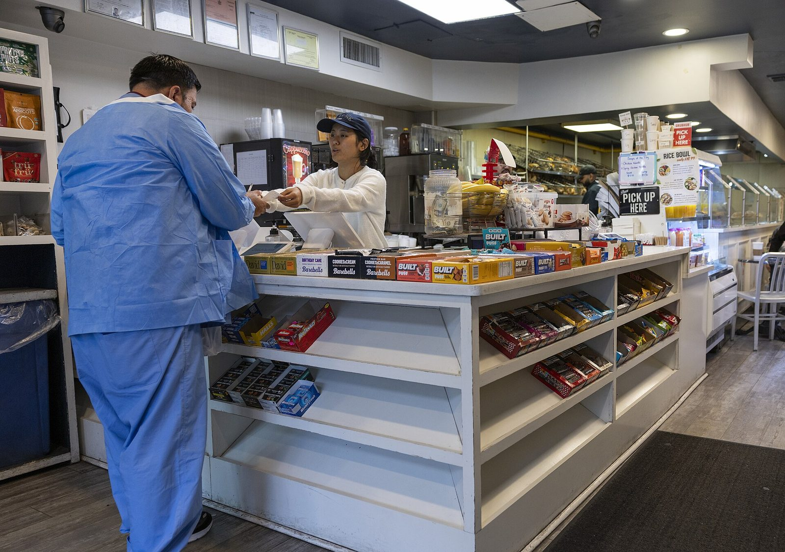
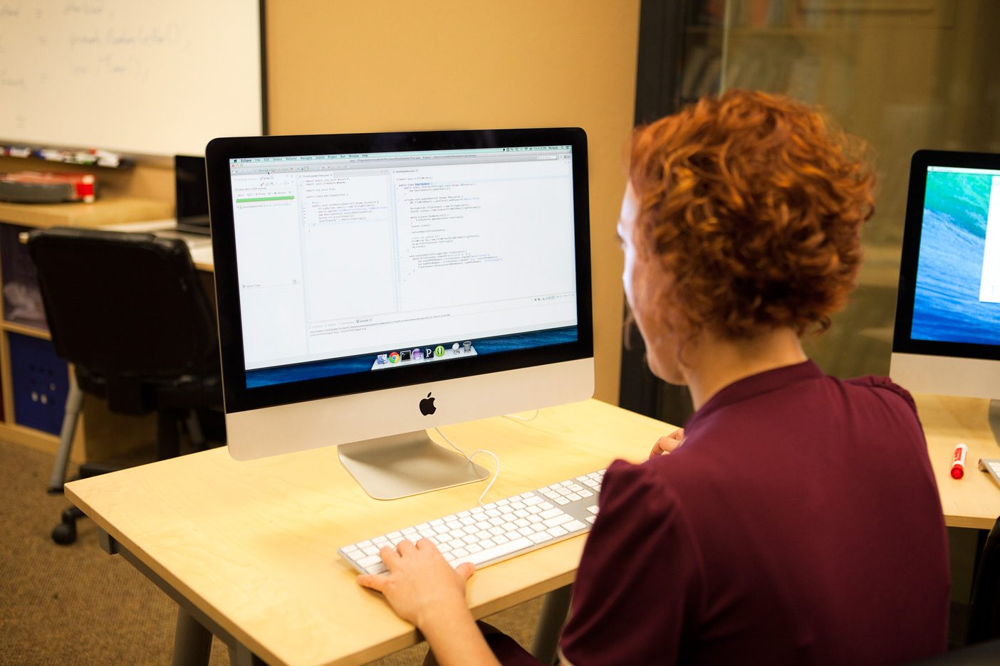

Websites that load fast and stay yours.
Marketing sites, online stores and campaign pages — mobile-first, editable by your own team, and wired to search and analytics before they go live.

What we build
Most business websites are slow because nobody was watching. We build in Next.js, render pages ahead of time wherever the content allows, and keep the JavaScript that reaches the phone as small as the design permits. The site should open in a second or two on a mid-range Android over 4G — not only on a laptop sitting next to the office router.
Content lives in a headless CMS, so your team edits text, images, pages, products and posts from a browser without calling us. We shape the fields around your content rather than handing over one blank rich-text box: a product has a price, a spec sheet and a gallery, a case study has a client type and a result. Layouts stay intact no matter who is editing.
Search and speed are part of the build, not a later phase. Every page gets a real title and description, schema markup where it applies — LocalBusiness, Product, FAQ, Article — a generated sitemap, a sensible robots file and clean internal links. Images are converted and sized at build time so Core Web Vitals still pass a month after launch. Where you sell online, checkout, payments and stock sit on the same stack instead of on a second platform that disagrees with the first.
What’s included
- Design and build of every page, mobile-first, on a live preview link you can open at any point in the project
- A headless CMS with fields shaped to your content, plus a handover session for whoever will actually be editing
- Technical SEO — titles, meta descriptions, schema markup, XML sitemap, robots.txt and redirects from every old URL
- Image optimisation, font loading and caching tuned until Core Web Vitals pass on mobile, measured not assumed
- Hosting, domain and SSL set up in your own accounts, with deploys running from your own repository
- Google Analytics 4 and Search Console connected and verified, tracking the handful of events that matter to you
- Thirty days of fixes after launch, then the whole thing is yours — code, content, accounts and all
At a glance
- Platforms
- Web · PWA
- Typical timeline
- 3–5 weeks
- Starting from
- ₹45,000 – ₹1,80,000
- You receive
- Code, CMS, accounts
- Support
- 30 days of fixes
Three kinds of site, one way of building.
Nearly every enquiry lands in one of these. The stack, the CMS and the handover stay the same either way — only the scope moves.
Marketing sites
The site most companies actually need: what you do, who it is for, proof that it works, and an obvious way to get in touch. Five to fifteen pages, a blog if you will keep it fed, and a CMS behind all of it.
Next.js, headless CMS, blog, schema

E-commerce
Catalogue, cart, checkout and stock, with Razorpay or Stripe handling payments and order updates going out over WhatsApp or email. One codebase, one place to log in, no second platform to reconcile.
Catalogue, payments, stock, orders

Landing pages & campaigns
Single-purpose pages for an ad campaign, a product launch or a trade show — built in days, with the form, the thank-you step and conversion tracking wired to Analytics and the ad platform so you can tell which version paid for itself.
Ads, forms, tracking, speed
From sitemap to go-live.
You see the real site on a live link from the second week. Nothing about launch day should be a surprise.
How long does a website take?
Three to five weeks for most marketing sites, counted from the day the content is ready rather than the day we start. A single landing page is usually under a week. An online store with a large catalogue and payment integration runs six to eight. If a date matters — a launch, an exhibition, a funding round — say so at the quote stage and we will scope to fit it rather than discover the problem in week four.
Can our own team update the site afterwards?
Yes, and that is the whole point of the CMS. Text, images, pages, blog posts, team members, products and prices are all editable from a browser with no developer involved. We shape the fields around your content so nothing can break a layout, run a handover session for whoever will be doing the editing, and leave a short written guide behind. If you would rather we handled updates, that is a separate arrangement — never a requirement.
What does it cost to run every month?
Less than most people expect. Hosting a standard marketing site runs from nothing to roughly ₹1,500 a month depending on traffic. A domain is about ₹800 to ₹1,500 a year. A headless CMS is free at small volumes and around ₹1,000 to ₹4,000 a month once you have several editors. Everything sits in your own accounts, so you pay the providers directly at their published rates and there is no margin added by us.
Do we own the code and the accounts?
Completely. The repository, the hosting, the domain, the CMS, the analytics — every account is created in your name or transferred to it at handover, along with the source code. We do not tie a site to a maintenance contract. If you decide next year to move to another studio, you can, and you will not need anything from us to do it.
Tell us what the site has to do.
A paragraph is enough — what you sell, who buys it, and what the current site gets wrong. You get a reply the same working day and a fixed quote within 48 hours.